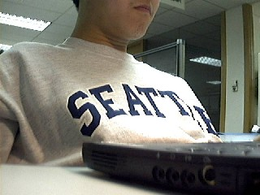
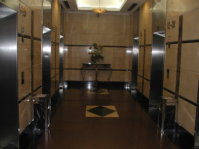

{kind=link}
 Thinking. Idle.
Thinking. Idle.Working.... I have two computer on my left hand and a laptop
See also: View outside my window | Software on my computer
Note: This is the place I work from Jan, 1999 to Dec, 2002. I no longer sit in this cubicle now. - March, 2003
Microsoft Global Engineering Center is located in Metro Tower, a commercial building in Xu Ji Hui Square. You can arrive there by many buses, but the most convenient transportation tools is the Metro. Metro Tower is exactly above Exit 10 of Metro Xu Jia Hui Station.
My current cubicle is on the 23rd floor of Metro Tower. It is also the seventh cubicle I have been seated in my three years with Microsoft. - Microsoft keeps changing, both the organization structures and cubicles.
I am standing in my cubicle, web cam in hand. The image is the reflection on the classes. The window is on the right hand of my table. It was night and some lights come from outside the window. I rented the flowers and plants on my window-stage. Venders will water and fertilize them on a weekly basis. Up to now, they all live well. I love the corner where I am located since the window you see solely belongs to me. I also have a white board (right on the photo). On the wall I attached some photos. They are printed using the new Print Pictures Wizard included in Windows XP®.

I am working late at the night at Nov 25, 2001. I am using a Dell Latitude CPx laptop computer and wearing the sweater I bought in Seattle seashore store. The strong light on characters "SEATTLE" comes from a lovely red table lamp I bought from IKEA.
Thinking. Idle.
Working....
I have two computer on my left hand and a laptop

The lobby of Metro Tower. Every morning at rush hours, the lobby is full of people waiting for elevator. The lobby is obviously too small for so many people.
Buy XenicalBuy Xanax Buy Phentermine mp3 players Buy Phentermine mp3 player Buy Cheap Phentermine Penis Enlargement Cialis Buy Cialis